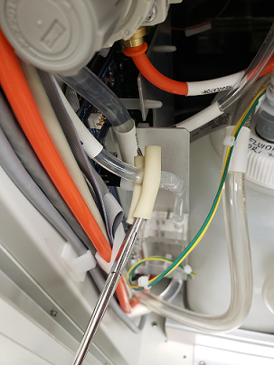
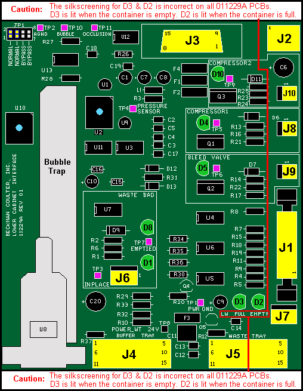

This procedure describes how to replace or install the Lower Cabinet Interface PCB.
Caution: Use proper PPE when performing this procedure.
-
Remove the Lower Cabinet Interface PCB.
-
Shut down the instrument.
- From the Main Menu, select
Configure > PC Admin > System Admin > Shut Down Instrument.
- Enter password
"Access2Support" or
"Access2Admin" and select
OK.
- Wait for instrument to shut down.
- Turn off the instrument power switch.
-
Remove the lower right rear cover of the instrument and place it in a location where it is safe from damage.
Note: If the instrument is using an external house air system or a drain system, be careful not to damage the fittings and tubing attached to the cover.

-
Locate the Lower Cabinet Interface PCB.
Note: The Lower Cabinet Interface PCB is mounted on the left side of the rear right wall.

-
Gently move the Intermediate Waste Jar out and put it to the side to gain access to the PCB.
-
Gently push or move the Accumulator Jar to the right side to gain more access to the PCB.
Note: For the DxI 600 instruments, the Accumulator Jar does not need to be moved to gain more access to the PCB.
-
Remove the Lower Cabinet Interface PCB cover from the four plastic standoffs and set to the side.
-
Clamp the small bubble trap out Y tubing, gently remove the plastic clamp or zip-tie securing the bubble trap vacuum sensor tubing, then disconnect the tubing from the PCB vacuum sensor connector
U10/PS2.

Note: Handle the tubing with care to avoid dropping fluid on any electronic connectors or components.
-
Gently remove the plastic clamp or zip-tie on the accumulator and compressor sensor tubing and remove the tubing from the sensor connector
U2/PS1.
-
Unscrew the three screws securing the bubble trap assembly to the PCB, then remove the bubble trap assembly and set it to the side.
Note: The bubble trap assembly will be reused or reinstalled to the new Lower Cabinet Interface PCB. If replacing the bubble trap assembly is required. then refer to
Fluidics: Replacing the Bubble Trap Assembly procedure.
-
Gently remove all the electronic connectors, serial cables, and ribbon cables on the Lower Cabinet Interface PCB.

- J1 - ribbon cable connection to MCC Backplane
- J2 - power harness connection to Power Distribution PCB
- J3 - serial connection to CPU card cage and DAQC PCB
- J4 - serial connection to Wash Buffer Drawer/Bulk Fluid Tray Interface PCB
- J5 - serial connection to Waste Fluids Drawer Interface PCB
- J6 - harness connection to Solid Waste Door Closed and Waste Reset Switches
- J7 - harness connection to intermediate Waste Bottle Float Sensor
- J8 - harness connection to Air Compressor 1
- J9 - harness connection to Moisture Bleed Valve
- J10 - harness connection to Air Compressor 2
-
Turn the four plastic standoffs counter-clockwise to remove the top portion of the standoffs securing the PCB, then remove the Lower Cabinet PCB from the wall.
-
Install the Lower Cabinet PCB.
-
Place the bubble trap assembly to the Lower Cabinet Interface PCB, ensure the bubble trap block is flush with the bubble detector sensor
U8, and screw in the three screws securing the bubble trap assembly in place.
-
Place the PCB on the four bottom standoffs mounted on the wall and hold on the PCB to align it to the standoffs.
-
Screw in the four top plastic standoffs to secure the PCB.
-
Connect the bubble trap vacuum sensor tubing to the bubble trap vacuum sensor connector
U10/PS2, remove the clamp on the tubing, and use a plastic clamp or zip-tie to secure the tubing in place.
Note: Handle the tubing with care to avoid dropping fluid on any electronic connectors or components.
-
Connect the accumulator sensor tubing to the accumulator sensor connector
U2/PS1 and use a plastic clamp or zip-tie to secure the tubing in place.
-
Connect all the electronic connectors, serial cables, and ribbon cables to the Lower Cabinet Interface PCB.
- J1 - ribbon cable connection to MCC Backplane
- J2 - power harness connection to Power Distribution PCB
- J3 - serial connection to CPU card cage and DAQC PCB
- J4 - serial connection to Wash Buffer Drawer/Bulk Fluid Tray Interface PCB
- J5 - serial connection to Waste Fluids Drawer Interface PCB
- J6 - harness connection to Solid Waste Door Closed and Waste Reset Switches
- J7 - harness connection to intermediate Waste Bottle Float Sensor
- J8 - harness connection to Air Compressor 1
- J9 - harness connection to Moisture Bleed Valve
- J10 - harness connection to Air Compressor 2
-
Turn on the instrument.
-
If the Lower Cabinet PCB is revision AC and higher, then perform the
Fluidics: Calibrating the Lower Cabinet Interface PCB procedure.
-
Prime the instrument and check for leaks.
-
Calibrate the Wash Buffer Bubble Trap Sensors. Refer to
Fluidics: Calibrating Wash Buffer Supply Bubble Detector procedure.
-
Place the Accumulator Jar and Intermediate Waste Jar back in place.
-
Reinstall the lower right rear cover of the instrument.
-
Run System Check. Refer to
Verification of Service Repairs: Pnematics document for verification details.